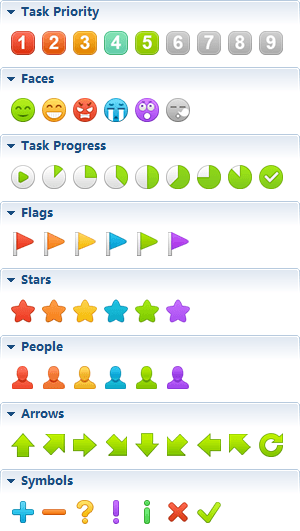
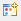
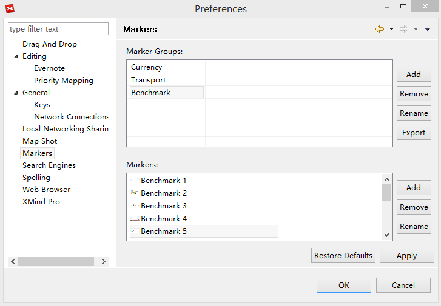
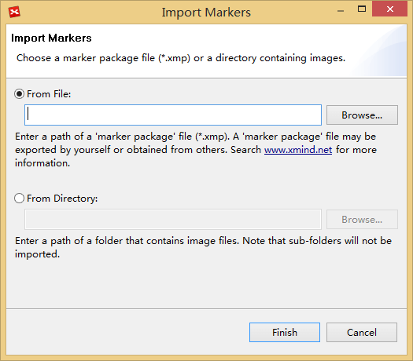
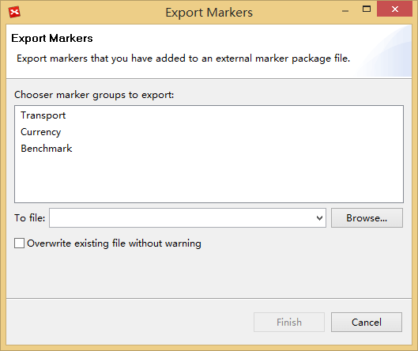

マーカー
マーカーは、マップに特別な意味を表現するために使用される、イメージのアイコンで、プロジェクト管理、計画、その他の組織の活動で広く使用されています。マーカーは、マインド マップの表現力を上げ、見栄えを良くします。また、独自のマーカーをインポートし、他のユーザーとの共有も可能です。
マーカーの追加:- トピックを選択します。
- マーカービューは、メニューから[表示]→[マーカー]をクリックして 開きます。
- マップに追加したいマーカーをクリックします。
- マーカーは、選択したトピックに追加されます。

既存マーカーの削除:
- トピックを選択します。
- マウスでマーカーを右クリックし、[削除]を選択します。
マーカーをアイコンからインポート:
- マーカービューを開きます。
- ビューの右上の、[マーカー マネージャー] アイコン をクリックします。
- 「マーカー グループ フィールド横に '追加' をクリックし、、新しいグループの名前。
- 新しいマーカー グループを選択し、'マーカー' 入力欄の横にある[追加]をクリックします。
- 画像を選択し、[開く] をクリックして、XMind に追加します。
- [適用]をクリックします。

注 : 追加されたマーカーやマーカーグループを、削除、名前を変更、上に移動、下に移動することができます。フォルダーからマーカーをインポートする
- マーカービューを開き、ビューの右上の[マーカーの取り込み]をクリックします。
- 選択したフォルダーから、マーカーグループファイル ('.xmp') かローカル イメージをインポートできます。
- [完了]をクリックします。

マーカーグループをエクスポートする- マーカービューを開き、[マーカーの書き出し]をクリックします。
- Select "Marker Groups"
- Select save path, and click "Finish"

注: 図例を使うことで、マーカーを説明することができます。